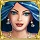
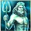
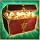

5-Reel 25-line Slots
The objective of Atlantis Queen is to obtain winning symbol combinations by spinning the reels.To play the game:
Line bets are chosen by clicking + and – below Line Bet to increase or decrease the amount.
Paylines can be activated and their shape displayed by progressively clicking + and – below Lines. Paylines can also be activated by using the numbered buttons on either side of the reels. Selecting a high payline includes all the lower ones too. For example, selecting payline 6 also activates paylines 1 through 5. Clicking Bet Max activates all paylines with the currently selected bet per line and spins the reels.
Total bet per game round = line bet X active paylines.
Clicking Spin spins the reels with the current selection of lines and line bets. During the reel spins the Spin button changes into Stop. Clicking Stop ends the spin animation and immediately displays the spin result.
Reels can also be spun using the Auto Play function. Mouse over the Auto Play button to display the list of options. Select the number of spins to be played automatically or choose 'Until Feature' to spin until the Pearl Bonus or the Atlantis Temple Bonus is triggered. Clicking on an option starts the Auto Play function. The Auto Play button changes into Stop during the Auto Play mode. The Auto Play mode ends when the reels have been spun the number of times determined by the player, or when the Pearl Bonus or the Atlantis Temple Bonus is triggered if you chose 'Until Feature', or when you click Stop.
Wins are calculated according to the paytable. Line win = line bet X corresponding multiplier according to the paytable. Scatter win = total bet X corresponding multiplier according to the paytable. The paytable can be accessed via the Info page.
On a given payline, only the highest payline winning combination pays while simultaneous winnings on different paylines are accumulated.
In case of a winning spin, the Win field displays the accumulating winnings. The Win ticker can be stopped by clicking anywhere on the screen to display the total win amount immediately.
Payline wins and the total win are also displayed on the strip located at the bottom of the reels or the game window.
Info page:
Clicking Info opens the reference screen describing different game components. Clicking the arrow buttons at the lower right-hand corner of the screen enables navigating between the different info screens.
The Paytable screen shows all winning combinations. When opened after a winning spin, the winning symbol combinations (number of symbols and bet multiplier) are highlighted and blink.
The Pearl Bonus screen describes the symbol combinations necessary to enter the bonus round and explains its rules.
The Atlantis Temple Bonus screen describes the symbol combinations necessary to trigger the bonus round and explains its rules.
Clicking Show Paylines on the Paytable page, opens a screen that illustrates all possible payline combinations. Clicking Hide Paylines closes this screen and returns to the Paytable page.
Clicking Back exits the Info screen and returns to the game.
Paylines:
Active paylines are represented by lines that appear over the reels. Paylines can be activated and their shape displayed by progressively clicking + or – below Lines.
Only active paylines can register wins.
There is a difference between the line bet and the total bet. The line bet shows how much is being bet on a single payline. The total bet shows how much is being bet in total on the game round. Payouts shown in the paytable are multiplied by the line bet.
The Scatter symbol is an exception to these rules. More information about the Scatter symbol can be found below.
About payouts:
Payouts are listed on the Paytable screen. To find the possible win amount, the line bet must be multiplied by the payout.
If two payline winning combinations occur on the same line, the higher of them is paid out. If more than one active payline has a winning combination, the winnings are accumulated.
Winning combinations must start from the left most reel, and the symbols have to be consecutive.
The Scatter symbol is an exception to these rules. More information about the Scatter symbol can be found below.
Maximum Win Limit
The maximum win in the game has an upper limit. For more information, see the Terms and Conditions section.
Wild symbol
The Wild symbol  appears only on reels #2, #3 and #4. It can stand for any other symbol, except Scatter, to make the best possible winning combination.
Wild symbol combinations do not pay separately.
If after a main game or a Free Games reel-spin 3 Wild symbols appear simultaneously in any position on reels #2, #3 and #4, the Pearl Bonus is triggered. More information about the Pearl Bonus can be found here.
Scatter symbol
The Scatter symbols do not have to occur on any particular payline. If there are 2 or more Scatters in any position in the spin results, the payout earned is multiplied by the total bet and added to payline winnings.
If 3 or more Scatter symbols appear simultaneously anywhere on the reels during main game, the Atlantis Temple Bonus round is triggered. More information about the Atlantis Temple Bonus can be found here.
Pearl Bonus
3 Wild symbols appearing anywhere on reel #2, #3 and #4 after a main game or a Free Games reel-spin, trigger the Pearl Bonus round.
A centered window automatically reveals 9 pearl shells with 9 pearls - gold, silver or bronze. Any of the 3 types award a bonus cash prize, whose value is a random multiple of the total bet. At the end of the Pearl Bonus the cash prizes, for which each pearl has stood for, are added up, thus making up the total bonus prize.
Atlantis Temple Bonus
3 or more Scatter symbols appearing simultaneously anywhere on the reels after a main game reel-spin, trigger the Atlantis Temple Bonus round.
To start the Atlantis Temple Bonus round, click on Click to Start. A welcoming screen appears saying that the Bonus round follows and explains its rules. Click Continue to start playing.
The Atlantis Temple Bonus round includes a grid of 4 rows and 5 columns. Starting from the bottom row, you have to pick 1 stone at a time from the rows to win a prize.
Stones picked from the 1st row determine the number of Free Games. Each pick may award 4, 5, 7, 10, or 12 Free Games.
Stones picked from the 2nd row reveal the win multiplier to be used during the Free Games. Each pick may award a multiplier of x1, x2, or x3.
Stones picked from the 3rd row reveal an Extra Scatter symbol to be used during the Free Games.
Stones picked from the 4th row reveal an Extra Wild symbol to be used during the Free Games.
When a stone is picked, one of the following occurs:
The next pick is made from the row above.
An extra pick is given in the currently active row (applies only for the 1st and 2nd rows).
The whole column is automatically opened.
The selected stone reveals a Collect item – the Bonus round ends and the Free Games start.
The win multiplier applies to all line wins and Scatter and Extra Scatter wins during the Free Games.
Extra Scatter can be any other symbol except Wild, Scatter, Poseidon  , or Treasure Chest  symbols. Extra Scatter wins are multiplied by the total bet. The symbol that was picked as Extra Scatter will not appear on the next row, where Extra Wild should be chosen.
Extra Wild can be 1 out of the 5 theme symbols, excluding the symbol, picked up as Extra Scatter.
Wild and Extra Wild do not substitute for Scatter and Extra Scatter.
After having picked up the stones, a screen will appear showing the awarded bonus prizes, which will be applied during the Free Games round. More information about Free Games can be found here.
Free Games
The Extra Scatter symbols do not have to occur on a particular payline – if there are 3 or more Extra Scatter symbols in the Free Game results, the win is added to the payline winnings. The Extra Scatter wins according to the payout of the original symbol, but the payout is multiplied by the total bet.
During the Free Games, the Wild and Extra Wild substitute for all symbols, except Scatter and Extra Scatter. Wild also substitutes for the Extra Wild theme symbol. Note that Extra Wild can still win according to the payout of the original symbol when the symbols appear on an active payline. This is paid out if the win amount from the Extra Wild is larger than the win from the regular symbol (by Extra Wild standing in).
During the Free Games, the Atlantis Temple Bonus round cannot be retriggered. However, if appears on reel 3 during the Free Games, 3 extra Free Games are added to the remaining ones. The win multiplier, Extra Wild and Extra Scatter symbols do not change.
During the Free Games, the Pearl Bonus round can occur. Note that Extra Wild does not substitute the Wild symbol towards the Pearl Bonus round. In addition, the Free Games win multiplier does not apply on the Pearl Bonus round prizes.
To start the Free Games, click on Continue.
During the Free Games, the reels are spun automatically using the same number of lines and bets per line as on the spin that won the Atlantis Temple bonus. After each spin, the win is displayed in the Win field. The Free Games Win field shows the accumulated winnings from the current Free Games.
After all Free Games have been completed, a result board summarizes the winnings. Game win shows the winnings that were received from the spin that won the free games. Feature win shows the winnings that were received during the Free Games. Total win shows the aggregate winnings (Game Win and Feature Win added up).
Clicking Continue will return you to the main game. When returning to the main game, clicking anywhere on the screen stops the win ticker and displays the full prize.
Return to Player
The theoretical percentage return to player (RTP) is 95.98%.